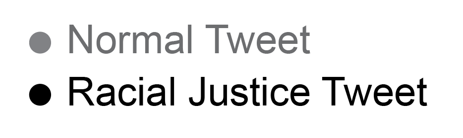

Below are tweet summaries from May 25 to July 25 for the 91 members of the Fortune 100 that have active Twitter accounts. Hover over each data point to view the tweet text, and click to open the tweet on Twitter. If the tweet has been deleted, you will be directed to an error page, but the text and media are still available in the dataset. Each plot follows the following legend:

Where a "Racial Justice Tweet" answers the question: "Does this tweet address the subject of racial inequity as it relates to the death of George Floyd and subsequent protests?" The gray area and nuances surrounding this question are parsed in detail on the dataset's page on GitHub.
Each Racial Justice Tweet is also marked with the following tags:
The following nine Fortune 100 companies were not mapped to a Twitter account: Apple, Berkshire Hathaway, AmerisourceBergen, Costco Wholesale, JPMorgan Chase, HCA Healthcare, TJX, World Fuel Services, and Plains GP Holdings.
A brief contextual summary is provided for some corporations, but you're welcome to filter by sector and hide the summary text to better navigate the dataset.
Jump to:
Exxon Mobil joined 30 other companies for the "In this Together" campaign, which collectively raised $1 billion for minority-owned businesses. A statement from Exxon Mobil was not found.
Ford did not post a press release after George Floyd's death and subsequent protests, but when mistakenly linked to Black Lives Matter donations, Ford released a statement, clarifying that "Ford is proud to be America’s long-time leader in producing police, emergency and first responder vehicles." In a press release, Ford claims to supply two-thirds of police vehicles.
Ford released an internal memo (that was ultimately leaked) when their employees questioned Ford's relationship to police departments. The then-CEO Jim Hackett responded, “The issues plaguing police credibility have nothing to do with the vehicles they’re driving.”
When contacted, WBA spokesperson Suzanne Barston explained that the Walgreens brand handle used for this analysis doesn't necessarily capture the constellation of accounts used by WBA to communicate.
Barston: "For our consumer-facing handles (@Walgreens, @BootsUK, @No7Beauty, etc.) we are speaking directly to customers. However, we have corporate handles (@WalgreensNews, @WBA_Global) that we use to communicate with media, corporate stakeholders, and (to a smaller degree) employees/prospective employees. On our @WalgreensNews handle we also share a lot of our corporate storytelling which is consumer-facing, but for those “corpsumers” who care about how the business shows up in their communities and the world."
When contacted, Microsoft spokesperson Carley Petersen pointed to three company announcements:
No news or statement found.
When contacted, a Citi spokesperson Graham Buck agreed that the tweets were correctly characterized, and pointed anyone interested in Citi's racial justice efforts to go to citi.com/racialequity.
While Citi uses Twitter, Buck said, "Because of the dialogue that occurs on the platform and the room to write with more nuance, we use Linkedin more as a thought leadership platform and a forum for our executives to talk about our values."
No news or statement found.
General Electric posted a single tweet about how "diversity drives innovation", but did not directly address the protests. And the CEO outlined a plan to increase diversity, including a "$1MM contribution to fund economic inclusion" from the GE Foundation. The GE Foundation did not tweet about this effort.
The CEO released a memo to staff, the company didn't tweet about it.
When contacted, Raytheon spokesperson Chris Johnson explained that LinkedIn, not Twitter, is the primary channel through which Raytheon uses "for these types of engagements." "We believe Twitter’s word count limits... our ability to thoughtfully communicate." He pointed to many LinkedIn posts concerning racial justice.
Boeing released a statement. They did not tweet about it. Boeing has tweeted CEO's statements before.
No news or statement found. Though in June 2020, the CEO appeared on Mad Money with Jim Cramer, touting Centene's support of the Ferguson community in 2014.
When contacted, ADM spokesperson Jackie Anderson suggested that @ADMUpdates is a more representative Twitter account. The dataset was not updated for the new handle, given that there is only a one tweet difference. Anderson also recommended those interested to read this interview with Ana Apolaro, ADM's VP of HR.
No news or statement found.
No news or statement found.
They committed $10 million dollars to the National Urban League and the National Action Network to Assist Black-Owned Small Businesses in Underserved Communities. They did not tweet about it on their main account, but they did tweet about it on their jobs and press account. The main account @getSpectrum is mostly for advertising their content.
The CEO released a statement, but it wasn't placed on Twitter. New York Life Insurance has placed statements from the CEO on Twitter before
Their CEO released a statement. Best Buy did not tweet the statement, but they use their Twitter account mostly for promotional purposes. Best Buy did not allow their employees to wear a "Black Lives Matter" mask.
No news or statement found. Larry Ellison had been an advocate and donor for former President Trump (though not without pushback from employees), a relationship that helped Oracle secure a deal to acquire a sizable share of TikTok.
No news or statement found.
When contacted, General Dynamics spokesperson Jeff Davis explained, "Each of our U.S. business unit presidents made statements during the BLM protests aimed primarily at internal/employee audiences, most who we connect with via company intranet portals, e-mail, or in some cases paper. Some of those statements were shared publicly or in private groups on LinkedIn or Facebook, and it was addressed in our corporate sustainability report released in the fall. While we and most of our business units have a presence on Twitter, it is not central to how we communicate."
According to the WSJ: "Insurance giant Progressive Corp. has pledged $1 million to the Equal Justice Initiative in support of the nonprofit’s efforts to end mass incarceration, excessive punishment and racial injustice, said Tricia Griffith, the company’s chief executive."
But the WSJ did not provide further information, Progressive did not tweet about the donation, and there is no press release about it. They have tweeted about their philanthropy in the past.
The CEO released a statement, pledging $1 million to the National Urban League. The donation was only mentioned on Twitter when directly responding to people critical of Publix not being a vocal supporter of BLM.
Their employees cannot wear "BLM" masks. Publix says explicitly that it is characterized as "non-Publix messaging".
When contacted, Conoco Phillips spokesperson John Roper agreed that the tweets were correctly characterized. He pointed to three public pieces concerning their racial justice initiatives:
The corporation released a statement that they will give $1M and match $1M of their employees' donations. They did not tweet about it. They have tweeted about their philanthropic work before.
No news or statement found. StoneX is an Italian-based company. Their tweets also seem automated.